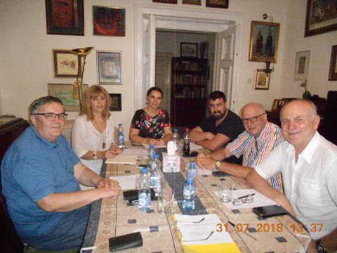

The Foundation develops the basic principles of human solidarity, humanity and nobility and to this end encourages and rewards the creativity of the gifted artists and students of theater, film and other related arts.
The Foundation is a legal entity, established on 8 August 2014, at the initiative of Miroslav Lukic, her husband
Ruzice Sokic, in the name and for the glory of this top Serbian drama artist, during the fifty years of her
artistic activities, pursued the benefits of generally useful goals in the field of theater, film and others
related arts.
As a contribution to the set goals, the Foundation established the Annual Ruzica Sokic Award, which is awarded
every year on December 14 at Foundation Day for outstanding contributions to the theater and film arts. The reward
constitute a charter and a sum of money. The bodies of the Foundation are the manager and the board of directors, who are appointed by the founder.
THE WORD OF THE FOUNDER
"Today I think it represents the completion of the history of the great playwright Ruzica Sokic by creating hers
Foundations. This text aims to keep that history.
Ruzica Sokic was a great playwright of Serbian theater and film. From the drama section of your own
high schools, through acting studios, and then through play in several Belgrade theaters, and especially by playing in
Atelier 212, Ruzica had devoted her entire life, herself, to the theater scene.
She also gained fame and respect for the great actress in numerous roles in the then existing Yugoslavia
Film as well as on Serbian Television.
In the national culture of Serbia, her participation is of particular importance, as an artist predominantly committed to
the affirmation of domestic playwrights.
Of the nearly 60 years of her artistic life, I have spent half with her and been an active witness to beauty and
enslavement to an actor’s call.
Actors, like all other reproductive artists: singers, players, musicians and more, carry the fate of being faster
forgotten, thanks to generational changes, than other artists leaving material works.
Charters, awards, programs, posters, are evidence of creative effort, passion and success! Fortunately, the movie and
TV tapes are tools that leave more trace on the works of actors and other supporting, or related artistic
content.
Small nations forget their greatness more and more quickly, their ancestors who have made their peoples lives significant
contribution. So I decided to support the need for a lasting memory of the great Ruzica Sokic by
to form her FOUNDATION.
The Foundation's goals are to support the development of theater and film art on its behalf through support and
to assist individual artists or programs of the country of Serbia.
With such a decision, I fulfill the need of my piety, respect and love, which I carry for Rose and firm
the need to fulfill her last wish expressed shortly before the end of her broken life: „
please,
don't forget me “ …
Miroslav Lukić, s.r.


.jpg)
MEMBERS OF THE FOUNDATION MANAGEMENT BOARD

Vesna Milekic Stankovic, President and Members Radoslav Zelenovic, Zoran Djordjevic, Vladan Djurkovic, Marina Gavrilovic and Milovan Zdravkovic.